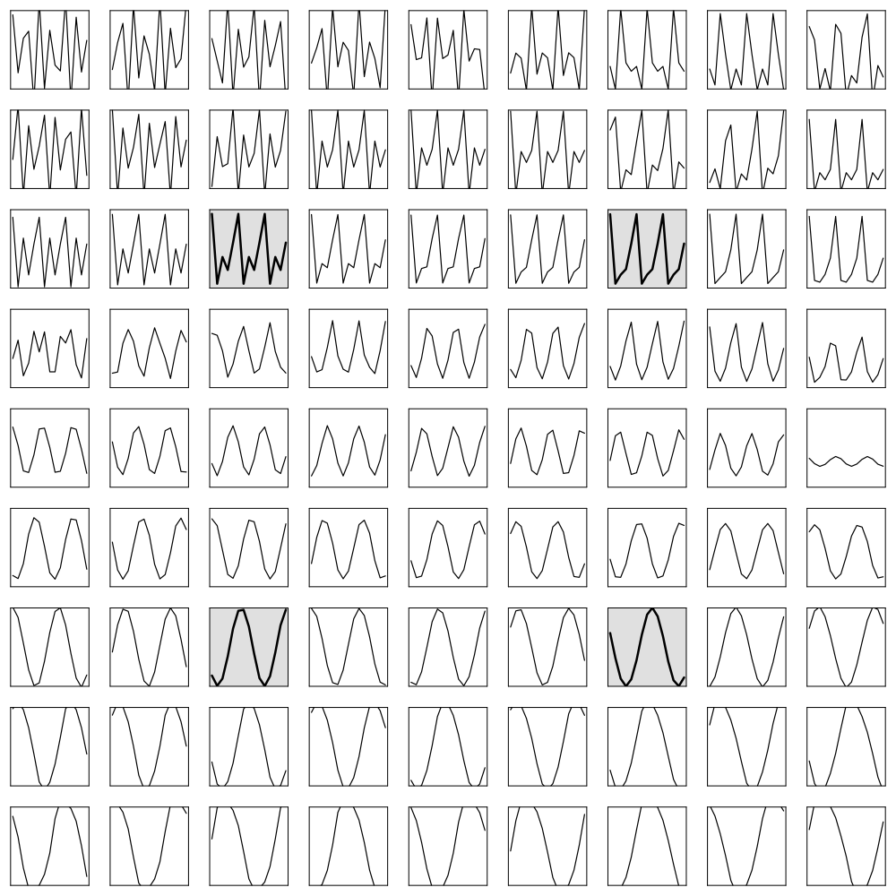

Morphing patterns with conceptors
This example reproduces the morphing square from Jaeger (2014), Controlling Recurrent Neural Networks by Conceptors ((Jaeger, 2014), arXiv:1403.3369, Figure 2). A single reservoir is loaded with four patterns; their conceptors are then linearly morphed and used to drive the reservoir autonomously, generating a continuum of patterns that interpolate between, and extrapolate beyond, the four originals.
A conceptor is a positive semidefinite matrix $C = R (R + \alpha^{-2} I)^{-1}$ built from the correlation matrix $R$ of a reservoir's driven states. Inserted into the autonomous update $x(n) = C\,\tanh(W x(n-1) + b)$, it constrains the reservoir dynamics to the subspace excited by one loaded pattern, so the reservoir re-generates that pattern. A linear combination of conceptors morphs between them.
The four driving patterns
Following the original demonstration we use two sines of slightly different period and two minor variations of a 5-periodic random pattern, all in $[-0.9, 0.9]$. The two period-5 vectors are the ones from the published figure.
using ReservoirComputing
using Random
using Plots
const PERIOD_1 = 8.8342522
const PERIOD_2 = 9.8342522
const DRIVER_LEN = 1500
# period-5 patterns, sampled as rp[mod(n,5)+1] (values from Jaeger 2014, Fig. 1B)
const RAND5 = [0.16, 0.9, -0.9, -0.21, -0.55]
const PERTURB5 = [0.10, 0.9, -0.9, -0.65, -0.54]
period5(rp, n) = rp[mod(n, 5) + 1]
n = 1:DRIVER_LEN
patterns = [
:s1 => reshape(sin.(2π .* n ./ PERIOD_1), 1, :),
:s2 => reshape(sin.(2π .* n ./ PERIOD_2), 1, :),
:r3 => reshape([period5(RAND5, i) for i in n], 1, :),
:r4 => reshape([period5(PERTURB5, i) for i in n], 1, :),
]Building and loading the reservoir
We build a 100-unit ESN with the scalings used in the report (spectral radius 1.5, input scaling 1.5, bias scaling 0.2) and wrap it in a Conceptor. loadpatterns drives the reservoir with each pattern, stores a conceptor for it, and recomputes the recurrent weights into an input-internalizing matrix so the reservoir can run autonomously.
using LuxCore: initialparameters, initialstates
rng = Xoshiro(3)
bias_init(r, dims...) = 0.2f0 .* randn(r, Float32, dims...)
input_init(r, dims...) = 1.5f0 .* randn(r, Float32, dims...)
res_init(r, dims...) = rand_sparse(r, dims...; radius = 1.5f0, sparsity = 0.1f0)
esn = ESN(1, 100, 1; use_bias = true, init_bias = bias_init,
init_input = input_init, init_reservoir = res_init)
concept = Conceptor(esn)
ps = initialparameters(rng, concept)
st = initialstates(rng, concept)
ps, st = loadpatterns(rng, concept, patterns, ps, st; aperture = 4.0, washout = 500)Morphing across the square
For a grid of mixing coordinates $a, b \in \{-0.5, \dots, 1.5\}$ we form the morphed conceptor $M = \mu_1 C_{s1} + \mu_2 C_{s2} + \mu_3 C_{r3} + \mu_4 C_{r4}$ with
\[\mu_1 = (1-a)\,b,\quad \mu_2 = a\,b,\quad \mu_3 = (1-a)(1-b),\quad \mu_4 = a\,(1-b),\]
(the coefficients always sum to one), and run the reservoir autonomously under $M$ with generate. All panels share one start state so their phases are comparable.
morph_weights(a, b) = (; s1 = (1 - a) * b, s2 = a * b,
r3 = (1 - a) * (1 - b), r4 = a * (1 - b))
grid = collect(-0.5:0.25:1.5)
x0 = rand(Xoshiro(4), 100)
prototypes = Set([(0.0, 1.0), (1.0, 1.0), (0.0, 0.0), (1.0, 0.0)])
plt = plot(layout = (length(grid), length(grid)), size = (1000, 1000),
legend = false, framestyle = :box, ticks = false, link = :all)
for (ib, b) in enumerate(grid), (ia, a) in enumerate(grid)
M = morph_conceptor(st, morph_weights(a, b))
Y, _ = generate(concept, ps, st; conceptor = M, steps = 15,
washout = 190, init_state = x0)
k = (ib - 1) * length(grid) + ia # row ib (top = b = -0.5), col ia
proto = (a, b) in prototypes
plot!(plt, subplot = k, vec(Y); color = :black, linewidth = proto ? 2.5 : 1.2,
ylims = (-1, 1), background_color_subplot = proto ? :gray88 : :white)
end
plt
The four shaded panels are the loaded prototypes: the two sines sit on the $b = 1$ row, the two period-5 patterns on the $b = 0$ row. The inner block ($a, b \in [0, 1]$) interpolates smoothly between them; the outer panels extrapolate, producing distorted, higher-frequency variants.
Single-pattern recall and the conceptor algebra
Loading also lets the reservoir recall a single pattern by name, and the stored conceptors support an aperture adaptation (aperture_adapt) and a Boolean algebra (conceptor_and, conceptor_or, conceptor_not).
# autonomous recall of the first sine
Yrec, _ = generate(concept, ps, st; conceptor = :s1, steps = 100, washout = 200)
# conceptor algebra: shared vs. combined subspaces of the two sines
Cs1, Cs2 = get_conceptor(st, :s1), get_conceptor(st, :s2)
(quota(conceptor_and(Cs1, Cs2)), quota(Cs1), quota(conceptor_or(Cs1, Cs2)))(0.000771255f0, 0.11189359f0, 0.17949839f0)The triple is increasing — AND keeps only the shared directions, OR spans the union — illustrating the lattice structure of the conceptor algebra.